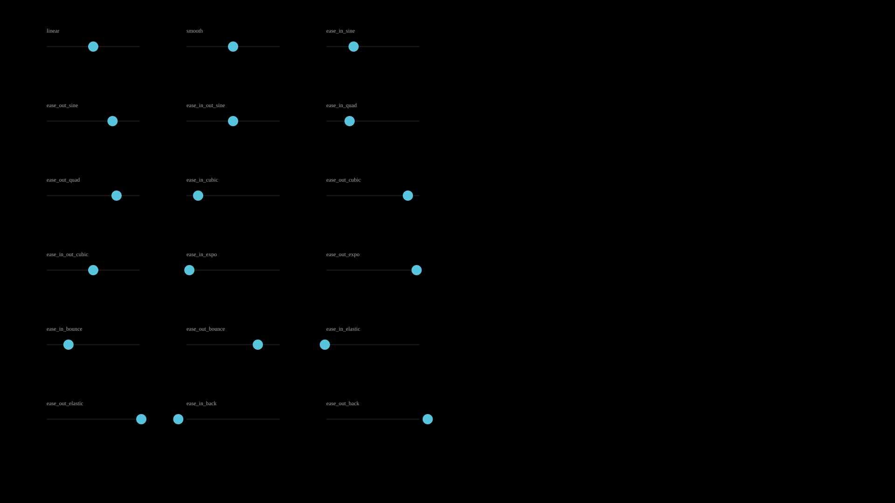
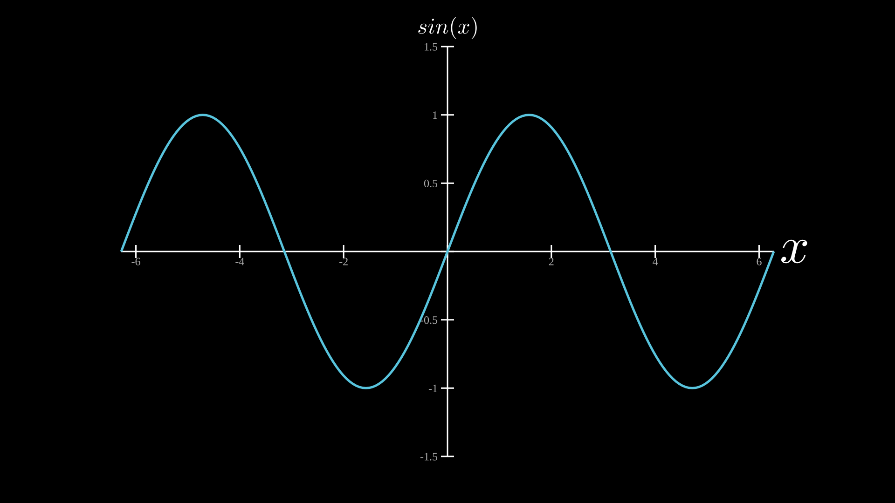
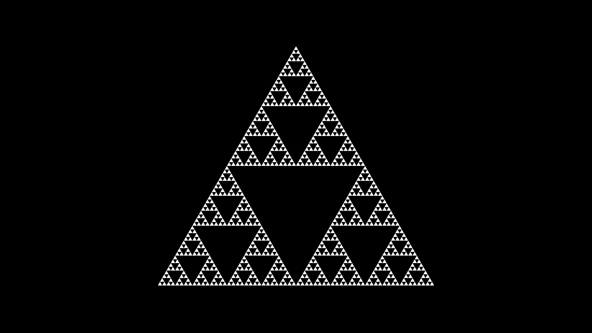
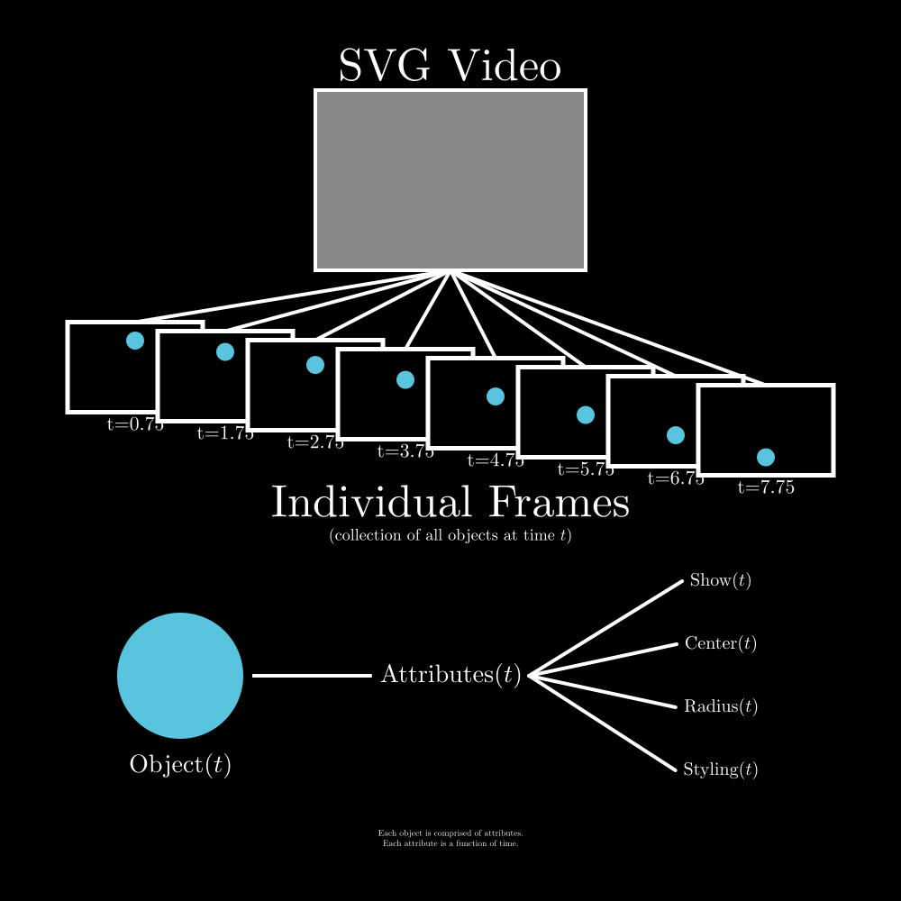

Examples¶
All examples are in the examples/ directory. Run any example with:
python examples/<example_name>.py
Use python examples/<name>.py -v for verbose logging or --no-display to skip the browser viewer.
Manim comparison examples are in examples/manim/ (see vs Manim).
Example: AnimationShowcase
A comprehensive showcase of all animation methods: appearance, drawing, movement, scaling, rotation, effects, and transforms.
Show code
# Layout: 5 columns, 6 rows
cols = [120, 360, 600, 840, 1080]
rows = [190, 430, 670, 910, 1150, 1390]
label_kw = dict(font_size=13, fill='#aaa', stroke_width=0, text_anchor='middle')
header_kw = dict(font_size=22, fill='#58C4DD', stroke_width=0, text_anchor='middle')
def lbl(text, col, row, t):
l = Text(text, x=cols[col], y=rows[row] + 90, **label_kw)
canvas.add_objects(l)
l.fadein(start=t, end=t + 0.3)
def section(text, row, t):
s = Text(text, x=600, y=rows[row] - 90, **header_kw)
canvas.add_objects(s)
s.fadein(start=t, end=t + 0.3)
# Title
title = Text('Animation Showcase', x=600, y=55, font_size=48,
text_anchor='middle', fill='#58C4DD', stroke_width=0)
canvas.add_objects(title)
title.fadein(start=0, end=0.5)
# =============================================================================
# Row 0 — Appearance
# =============================================================================
t = 1.0
section('Appearance', 0, t)
# fadein
fi = Circle(r=35, cx=cols[0], cy=rows[0], fill='#FC6255', fill_opacity=0.8, stroke='#FF8080', stroke_width=4)
canvas.add_objects(fi)
fi.fadein(start=t, end=t + 1.0)
lbl('fadein', 0, 0, t)
# fadeout
fo = Circle(r=35, cx=cols[1], cy=rows[0], fill='#83C167', fill_opacity=0.8, stroke='#A6CF8C', stroke_width=4)
canvas.add_objects(fo)
fo.fadein(start=t, end=t + 0.3)
fo.fadeout(start=t + 0.5, end=t + 1.5)
lbl('fadeout', 1, 0, t + 0.5)
# grow_from_center
gfc = Star(n=5, outer_radius=40, cx=cols[2], cy=rows[0],
fill='#F0AC5F', fill_opacity=0.8, stroke='#FFD700', stroke_width=4)
canvas.add_objects(gfc)
gfc.grow_from_center(start=t + 0.5, end=t + 1.5)
lbl('grow_from_center', 2, 0, t + 0.5)
# shrink_to_center
stc = EquilateralTriangle(side_length=65, cx=cols[3], cy=rows[0],
fill='#E8C11C', fill_opacity=0.8, stroke='#FFD700', stroke_width=4)
canvas.add_objects(stc)
stc.fadein(start=t, end=t + 0.3)
stc.shrink_to_center(start=t + 1.0, end=t + 2.0)
lbl('shrink_to_center', 3, 0, t + 1.0)
# write
wr = VCollection(
Rectangle(22, 22, x=cols[4] - 30 - 11, y=rows[0] - 11,
fill='#83C167', fill_opacity=0.8, stroke='#A6CF8C', stroke_width=4),
Circle(r=11, cx=cols[4], cy=rows[0],
fill='#58C4DD', fill_opacity=0.8, stroke='#88D4EE', stroke_width=4),
Star(n=5, outer_radius=13, cx=cols[4] + 30, cy=rows[0],
fill='#F0AC5F', fill_opacity=0.8, stroke='#FFD700', stroke_width=4),
)
canvas.add_objects(wr)
wr.write(start=t + 1.0, end=t + 2.5)
lbl('write', 4, 0, t + 1.0)
# =============================================================================
# Row 1 — Drawing & Text
# =============================================================================
t = 4.0
section('Drawing & Text', 1, t)
# create
cr = RegularPolygon(5, radius=35, cx=cols[0], cy=rows[1],
fill='#9A72AC', fill_opacity=0.8, stroke='#B189C6', stroke_width=4)
canvas.add_objects(cr)
cr_path = cr.create(start=t, end=t + 1.5)
canvas.add_objects(cr_path)
lbl('create', 0, 1, t)
# draw_along
da = Path(f'M{cols[1]-35},{rows[1]+20} C{cols[1]-35},{rows[1]-40} {cols[1]+35},{rows[1]-40} {cols[1]+35},{rows[1]+20}',
stroke='#58C4DD', stroke_width=4, fill_opacity=0)
canvas.add_objects(da)
da.draw_along(start=t + 0.5, end=t + 2.0)
lbl('draw_along', 1, 1, t + 0.5)
# typing
ty = Text('Hello!', x=cols[2], y=rows[1] + 8, text_anchor='middle',
font_size=28, fill='#83C167', stroke_width=0)
canvas.add_objects(ty)
ty.typing(start=t + 1.0, end=t + 2.5)
lbl('typing', 2, 1, t + 1.0)
# CountAnimation
ca = CountAnimation(start_val=0, end_val=42, start=t + 1.5, end=t + 2.5,
x=cols[3], y=rows[1] + 12, text_anchor='middle',
font_size=36, fill='#FC6255', stroke_width=0)
canvas.add_objects(ca)
ca.fadein(start=t + 1.5, end=t + 1.8)
lbl('CountAnimation', 3, 1, t + 1.5)
# stagger (each child grows one after another)
stg = VCollection(
Dot(r=12, cx=cols[4] - 30, cy=rows[1], fill='#FC6255'),
Dot(r=12, cx=cols[4] - 10, cy=rows[1], fill='#F0AC5F'),
Dot(r=12, cx=cols[4] + 10, cy=rows[1], fill='#E8C11C'),
Dot(r=12, cx=cols[4] + 30, cy=rows[1], fill='#83C167'),
)
canvas.add_objects(stg)
stg.stagger('grow_from_center', delay=0.3, start=t + 2.0, end=t + 2.5)
lbl('stagger', 4, 1, t + 2.0)
# =============================================================================
# Row 2 — Movement
# =============================================================================
t = 7.5
section('Movement', 2, t)
# shift
sh = Dot(r=10, cx=cols[0] - 30, cy=rows[2], fill='#58C4DD')
canvas.add_objects(sh)
sh.fadein(start=t, end=t + 0.3)
sh.shift(dx=60, dy=0, start_time=t + 0.3, end_time=t + 1.5)
lbl('shift', 0, 2, t)
# move_to
mt = Dot(r=10, cx=cols[1] - 30, cy=rows[2] + 20, fill='#FC6255')
canvas.add_objects(mt)
mt.fadein(start=t + 0.3, end=t + 0.6)
mt.move_to(cols[1] + 30, rows[2] - 20, start_time=t + 0.6, end_time=t + 1.8)
lbl('move_to', 1, 2, t + 0.3)
# center_to_pos
ctp = Rectangle(30, 30, x=cols[2] - 30, y=rows[2] + 16,
fill='#83C167', fill_opacity=0.8, stroke='#A6CF8C', stroke_width=4)
canvas.add_objects(ctp)
ctp.fadein(start=t + 0.6, end=t + 0.9)
ctp.center_to_pos(cols[2] + 16, rows[2] - 16, start_time=t + 0.9, end_time=t + 2.0)
lbl('center_to_pos', 2, 2, t + 0.6)
# along_path
ap = Dot(r=8, cx=cols[3] - 40, cy=rows[2], fill='#F0AC5F')
ap_path_d = f'M{cols[3]-40},{rows[2]} C{cols[3]-40},{rows[2]-60} {cols[3]+40},{rows[2]-60} {cols[3]+40},{rows[2]}'
ap_guide = Path(ap_path_d, stroke='#444', stroke_width=1, fill_opacity=0)
canvas.add_objects(ap_guide, ap)
ap_guide.fadein(start=t + 0.9, end=t + 1.1)
ap.fadein(start=t + 0.9, end=t + 1.1)
ap.along_path(start=t + 1.2, end=t + 2.5, path_d=ap_path_d)
lbl('along_path', 3, 2, t + 0.9)
# set_onward oscillating dot — custom per-frame animation
upd_dot = Dot(r=10, cx=cols[4], cy=rows[2], fill='#E8C11C')
canvas.add_objects(upd_dot)
upd_dot.fadein(start=t + 1.2, end=t + 1.5)
_upd_t0 = t + 1.5
upd_dot.styling.dy.set_onward(_upd_t0, lambda t: 25 * math.sin((t - _upd_t0) * 4))
upd_dot.styling.dy.set_onward(t + 3.5, 0)
lbl('set_onward', 4, 2, t + 1.2)
# =============================================================================
# Row 3 — Scaling & Rotation
# =============================================================================
t = 11.0
section('Scaling & Rotation', 3, t)
# scale
sc = RegularPolygon(6, radius=25, cx=cols[0], cy=rows[3],
fill='#FC6255', fill_opacity=0.8, stroke='#FF8080', stroke_width=4)
canvas.add_objects(sc)
sc.fadein(start=t, end=t + 0.3)
sc.scale(1.6, start=t + 0.3, end=t + 1.5)
lbl('scale', 0, 3, t)
# stretch
str_r = Rectangle(50, 30, x=cols[1] - 25, y=rows[3] - 16,
fill='#9A72AC', fill_opacity=0.8, stroke='#B189C6', stroke_width=4)
canvas.add_objects(str_r)
str_r.fadein(start=t + 0.3, end=t + 0.6)
str_r.stretch(x_factor=1.8, y_factor=0.6, start=t + 0.6, end=t + 1.8)
lbl('stretch', 1, 3, t + 0.3)
# rotate_to
rto = Rectangle(50, 30, x=cols[2] - 25, y=rows[3] - 16,
fill='#FC6255', fill_opacity=0.8, stroke='#FF8080', stroke_width=4)
canvas.add_objects(rto)
rto.fadein(start=t + 0.6, end=t + 0.9)
rto.rotate_to(start=t + 0.9, end=t + 2.0, degrees=45)
lbl('rotate_to', 2, 3, t + 0.6)
# rotate_by
rby = Star(n=4, outer_radius=30, cx=cols[3], cy=rows[3],
fill='#83C167', fill_opacity=0.8, stroke='#A6CF8C', stroke_width=4)
canvas.add_objects(rby)
rby.fadein(start=t + 0.9, end=t + 1.2)
rby.rotate_by(start=t + 1.2, end=t + 2.3, degrees=180)
lbl('rotate_by', 3, 3, t + 0.9)
# spin
spn = RegularPolygon(6, radius=30, cx=cols[4], cy=rows[3],
fill='#9A72AC', fill_opacity=0.8, stroke='#B189C6', stroke_width=4)
canvas.add_objects(spn)
spn.fadein(start=t + 1.2, end=t + 1.5)
spn.spin(start=t + 1.5, end=t + 3.0, degrees=360)
lbl('spin', 4, 3, t + 1.2)
# =============================================================================
# Row 4 — Effects
# =============================================================================
t = 14.5
section('Effects', 4, t)
# indicate
ind = Circle(r=30, cx=cols[0], cy=rows[4],
fill='#FC6255', fill_opacity=0.8, stroke='#FF8080', stroke_width=4)
canvas.add_objects(ind)
ind.fadein(start=t, end=t + 0.3)
ind.indicate(start=t + 0.5, end=t + 1.5, scale_factor=1.3)
lbl('indicate', 0, 4, t)
# flash
fl = Circle(r=30, cx=cols[1], cy=rows[4],
fill='#58C4DD', fill_opacity=0.8, stroke='#58C4DD', stroke_width=4)
canvas.add_objects(fl)
fl.fadein(start=t + 0.3, end=t + 0.6)
fl.flash(start=t + 0.8, end=t + 1.8, color='#FFFF00')
lbl('flash', 1, 4, t + 0.3)
# pulse
pu = Dot(r=14, cx=cols[2], cy=rows[4], fill='#83C167')
canvas.add_objects(pu)
pu.fadein(start=t + 0.6, end=t + 0.9)
pu.pulse(start=t + 1.0, end=t + 2.0, scale_factor=2.0)
lbl('pulse', 2, 4, t + 0.6)
# wiggle
wig = RoundedRectangle(60, 40, x=cols[3] - 30, y=rows[4] - 20,
corner_radius=6, fill='#E8C11C', fill_opacity=0.8,
stroke='#FFD700', stroke_width=4)
canvas.add_objects(wig)
wig.fadein(start=t + 0.9, end=t + 1.2)
wig.wiggle(start=t + 1.3, end=t + 2.3, amplitude=12, n_wiggles=5)
lbl('wiggle', 3, 4, t + 0.9)
# circumscribe
circ_obj = Star(n=5, outer_radius=28, cx=cols[4], cy=rows[4],
fill='#9A72AC', fill_opacity=0.8, stroke='#B189C6', stroke_width=4)
canvas.add_objects(circ_obj)
circ_obj.fadein(start=t + 1.2, end=t + 1.5)
circ_rect = circ_obj.circumscribe(start=t + 1.6, end=t + 2.8)
canvas.add_objects(circ_rect)
lbl('circumscribe', 4, 4, t + 1.2)
# =============================================================================
# Row 5 — Transforms
# =============================================================================
t = 18.0
section('Transforms', 5, t)
# MorphObject
mo_from = Circle(r=30, cx=cols[0], cy=rows[5],
fill='#58C4DD', fill_opacity=0.8, stroke='#58C4DD', stroke_width=4)
mo_from.fadein(start=t, end=t + 0.3)
mo_to = Rectangle(55, 55, x=cols[0] - 28, y=rows[5] - 28,
fill='#E8C11C', fill_opacity=0.8, stroke='#FFD700', stroke_width=4)
morph = MorphObject(mo_from, mo_to, start=t + 0.5, end=t + 2.0)
canvas.add_objects(mo_from, morph, mo_to)
lbl('MorphObject', 0, 5, t)
# fade_transform
ft_src = Circle(r=25, cx=cols[1], cy=rows[5],
fill='#FC6255', fill_opacity=0.8, stroke='#FF8080', stroke_width=4)
ft_tgt = Star(n=5, outer_radius=30, cx=cols[1], cy=rows[5],
fill='#83C167', fill_opacity=0.8, stroke='#A6CF8C', stroke_width=4)
canvas.add_objects(ft_src, ft_tgt)
ft_src.fadein(start=t + 0.3, end=t + 0.6)
VObject.fade_transform(ft_src, ft_tgt, start=t + 0.8, end=t + 2.0)
lbl('fade_transform', 1, 5, t + 0.3)
# swap
sw_a = Circle(r=18, cx=cols[2] - 25, cy=rows[5],
fill='#F0AC5F', fill_opacity=0.8, stroke='#FFD700', stroke_width=4)
sw_b = Rectangle(30, 30, x=cols[2] + 10, y=rows[5] - 16,
fill='#9A72AC', fill_opacity=0.8, stroke='#B189C6', stroke_width=4)
canvas.add_objects(sw_a, sw_b)
sw_a.fadein(start=t + 0.6, end=t + 0.9)
sw_b.fadein(start=t + 0.6, end=t + 0.9)
VObject.swap(sw_a, sw_b, start=t + 1.0, end=t + 2.2)
lbl('swap', 2, 5, t + 0.6)
# always_rotate (with explicit center)
ar = Star(n=5, outer_radius=28, cx=cols[3], cy=rows[5],
fill='#F0AC5F', fill_opacity=0.8, stroke='#FFD700', stroke_width=4)
canvas.add_objects(ar)
ar.fadein(start=t + 0.9, end=t + 1.2)
ar.always_rotate(start=t + 1.2, end=t + 3.5, degrees_per_second=120, cx=cols[3], cy=rows[5])
lbl('always_rotate', 3, 5, t + 0.9)
# scale_to
sct = Circle(r=20, cx=cols[4], cy=rows[5],
fill='#83C167', fill_opacity=0.8, stroke='#A6CF8C', stroke_width=4)
canvas.add_objects(sct)
sct.fadein(start=t + 1.2, end=t + 1.5)
sct.scale_to(start=t + 1.5, end=t + 2.8, factor=2.0)
lbl('scale_to', 4, 5, t + 1.2)
Animations¶
Example: Morphing
A LaTeX phrase morphs into another with a colour change.
# Draw the objects
text_from = TexObject('Who is the best?', font_size=70)
text_from.center_to_pos()
text_to = TexObject('You are the best!', font_size=70, fill='blue')
text_to.center_to_pos()
text_from.fadein(start=0, end=1)
obj = MorphObject(text_from, text_to, start=1, end=3)
# Add the objects to the canvas
canvas.add_objects(text_from, obj, text_to)
if args.verbose:
canvas.export_video('docs/source/_static/videos/morphing_example.mp4', fps=30, end_time=4)
Example: RotatingMorph
A circle morphs into a square while spinning 360 degrees.
# Create a circle and a square
circle = Circle(r=150, cx=500, cy=500, fill='#58C4DD', fill_opacity=0.8, stroke='#58C4DD')
square = Rectangle(250, 250, x=575, y=375, fill='#FC6255', fill_opacity=0.8, stroke='#FC6255')
# Fade in the circle first
circle.fadein(start=0, end=1)
# Morph the circle into the square with a 360-degree spin
morph = MorphObject(circle, square, start=1.5, end=4, rotation_degrees=360)
canvas.add_objects(circle, morph, square)
if args.verbose:
canvas.export_video('docs/source/_static/videos/rotating_morph.mp4', fps=30, end_time=5)
Example: EasingPreview

All 18 easing functions visualised side-by-side. Each dot travels its track using a different easing curve.
Show code
# List of easings to preview
easing_list = [
('linear', easings.linear),
('smooth', easings.smooth),
('ease_in_sine', easings.ease_in_sine),
('ease_out_sine', easings.ease_out_sine),
('ease_in_out_sine', easings.ease_in_out_sine),
('ease_in_quad', easings.ease_in_quad),
('ease_out_quad', easings.ease_out_quad),
('ease_in_cubic', easings.ease_in_cubic),
('ease_out_cubic', easings.ease_out_cubic),
('ease_in_out_cubic', easings.ease_in_out_cubic),
('ease_in_expo', easings.ease_in_expo),
('ease_out_expo', easings.ease_out_expo),
('ease_in_bounce', easings.ease_in_bounce),
('ease_out_bounce', easings.ease_out_bounce),
('ease_in_elastic', easings.ease_in_elastic),
('ease_out_elastic', easings.ease_out_elastic),
('ease_in_back', easings.ease_in_back),
('ease_out_back', easings.ease_out_back),
]
# Layout: grid of dots, each showing its easing
cols = 3
spacing_x = 300
spacing_y = 160
margin_x = 100
margin_y = 80
duration = 3
objects = []
for i, (name, easing) in enumerate(easing_list):
row = i // cols
col = i % cols
x_start = margin_x + col * spacing_x
y = margin_y + row * spacing_y
x_end = x_start + 200
# Label
label = Text(text=name, x=x_start, y=y - 10, font_size=12,
fill='#aaa', stroke_width=0)
# Dot that moves with the easing
dot = Dot(cx=x_start, cy=y + 20, fill='#58C4DD')
s, e = 0, duration
dot.c.set(s, e,
lambda t, _s=s, _e=e, _xs=x_start, _xe=x_end, _y=y+20, _ease=easing:
(_xs + (_xe - _xs) * _ease((t - _s) / (_e - _s)), _y),
stay=True)
# Track line
track = Line(x1=x_start, y1=y + 20, x2=x_end, y2=y + 20,
stroke='#333', stroke_width=1)
objects.extend([track, label, dot])
canvas.add_objects(*objects)
Plotting¶
Example: GraphExample

A simple sin(x) plot on labelled axes – the minimal plotting example.
# Plot sin(x) on [-2pi, 2pi]
graph = Graph(math.sin, x_range=(-2 * math.pi, 2 * math.pi),
y_range=(-1.5, 1.5), x_label='x', y_label='sin(x)')
canvas.add_objects(graph)
Example: AnimatedGraph
Sine and cosine curves drawn progressively with create animations.
# Plot sin(x) with animated curve drawing
graph = Graph(math.sin, x_range=(-2 * math.pi, 2 * math.pi),
y_range=(-1.5, 1.5), x_label='x', y_label='y')
# Animate the sin curve being drawn left to right
sin_path = graph.curve.create(start=0, end=2)
# Add a second function (cos) after the first is drawn
cos_curve = graph.add_function(math.cos, stroke='#FC6255')
cos_path = cos_curve.create(start=2.5, end=4.5)
canvas.add_objects(graph, sin_path, cos_path)
if args.verbose:
canvas.export_video('docs/source/_static/videos/graph_animated.mp4', fps=30, end_time=5.5)
Example: AxesZoom
Animated axis ranges: draw a parabola, zoom into a region of interest, pan across the curve, and track a dot — all by animating x_min, x_max, y_min, y_max as Real attributes.
ax = Axes(x_range=(-5, 5), y_range=(-2, 26), x_label='x', y_label='y')
f = lambda x: x ** 2
curve = ax.plot(f, label='$f(x)=x^2$', stroke='#58C4DD', stroke_width=4)
# Draw the curve in
create_anim = curve.create(start=0, end=2)
# Zoom into x=[1, 4], y=[0, 18] to inspect the curve more closely
ax.set_ranges(3, 5, x_range=(1, 4), y_range=(0, 18))
# Add a shaded area that appears after zooming in
area = ax.get_area(f, x_range=(1.5, 3.5), fill='#58C4DD', fill_opacity=0.3)
area.fadein(5.5, 6.5)
# Zoom back out to full view
ax.set_ranges(7, 9, x_range=(-5, 5), y_range=(-2, 26))
# Pan to the right: shift window to x=[0, 10], y=[0, 100]
ax.set_ranges(10, 12, x_range=(0, 10), y_range=(0, 100))
# Add a dot tracking along the curve during the pan
dot = Dot(fill='#FFFF00')
x_val = attributes.Real(0, 2)
x_val.move_to(10, 14, 9)
dot.c.set_onward(10, ax.graph_position(f, x_val))
dot.fadein(10, 10.5)
canvas.add_objects(ax, create_anim, dot)
Advanced¶
Example: Spiral
A dot traces a spiral path outward from the centre using parametric motion and rotation.
# Draw the objects
point = Dot()
trace = Trace(point.c)
# point.c.move_to(0, 5, (900, 500))
point.c.set(0, 5, lambda t: (t*80 + 500, 500))
point.c.rotate_around(0, 5, (500, 500), 360*4)
# Add the objects to the canvas
canvas.add_objects(trace, point)
if args.verbose:
canvas.export_video('docs/source/_static/videos/spiral.mp4', fps=30, end_time=6)
Example: HeartCurve
A parametric heart curve traced by a moving dot, then filled with red.
# Draw the objects
point = Dot()
point.c.set(0, 2*math.pi, lambda t: (
500 + 20*16*sin(t)**3,
500 - 20*(13*cos(t) - 5*cos(2*t) - 2*cos(3*t) - cos(4*t)),
), stay=True)
trace = Trace(point.c, start=0, end=2*math.pi, dt=1/60, stroke_width=4, stroke=(255,0,0))
pol = trace.to_polygon(2*math.pi)
trace.show.set_onward(7, 0)
pol.styling.fill.set_onward(7, (255,0,0))
pol.styling.fill_opacity.set(7, 8, lambda t: 0.35*(t-7), stay=True)
# Add the objects to the canvas
canvas.add_objects(trace, pol)
if args.verbose:
canvas.export_video('docs/source/_static/videos/heart.mp4', fps=30, end_time=9)
Example: SierpinskiTriangle

A fractal triangle built recursively over 6 levels using deepcopy.
# Draw the objects
tr = EquilateralTriangle(14, fill='white', fill_opacity=1, stroke_width=0)
# We build the triangle recursively (instead of dynamically for more of a challenge)
tr = VCollection(tr)
for level in range(6):
print(f'At level {level}')
bbox = tr.bbox(0)
xmin, ymin, width, height = bbox
lu, ru, um = (xmin, ymin+height), (xmin+width, ymin+height), (xmin+width/2, ymin)
tr.center_to_pos(posx=lu[0], posy=lu[1])
tr2 = deepcopy(tr)
tr2.center_to_pos(posx=ru[0], posy=ru[1])
tr3 = deepcopy(tr)
tr3.center_to_pos(posx=um[0], posy=um[1])
tr.objects.extend(tr2.objects)
tr.objects.extend(tr3.objects)
# Add the objects to the canvas
canvas.add_objects(tr)
if args.verbose:
canvas.write_frame(filename='docs/source/_static/videos/sierpinski_triangle.svg')
Example: SectionsAndSpeedControl
Shapes appear one at a time, pausing at section breaks. Press Space to advance, +/- to change speed.
# Section 1: A circle appears
circle = Circle(r=80, cx=300, cy=500, fill='#58C4DD', fill_opacity=0.8, stroke='#58C4DD')
circle.write(start=0, end=2)
canvas.add_section(2)
# Section 2: A square appears
square = Rectangle(140, 140, x=430, y=430, fill='#FC6255', fill_opacity=0.8,
stroke='#FC6255', rx=5, ry=5)
square.write(start=2, end=4)
canvas.add_section(4)
# Section 3: A triangle appears
tri = EquilateralTriangle(160, cx=700, cy=500, fill='#83C167', fill_opacity=0.8, stroke='#83C167')
tri.center_to_pos(700, 500) # Align visual centre with the other shapes
tri.write(start=4, end=6)
# Instructions text
hint = Text(text='Press Space to advance sections, +/- to change speed',
x=150, y=950, font_size=16, fill='#888', stroke_width=0)
canvas.add_objects(circle, square, tri, hint)
if args.verbose:
canvas.export_video('docs/source/_static/videos/speed_and_sections.mp4', fps=30, end_time=7)
Concepts¶
Example: CodeExplanation

An explanatory diagram showing how VectorMation decomposes an animation into frames, objects, and time-varying attributes.
Show code
### Draw the objects
## Making the upper SVG Video part
video_frame = Rectangle(300, 200, stroke_width=4, fill='grey', stroke='white', fill_opacity=1)
video_frame.center_to_pos(500, 500)
play_button_circle = Circle(r=30, fill_opacity=0, stroke='black', stroke_width=4)
play_button_triangle = EquilateralTriangle(30, angle=-90, fill='black', stroke_width=0, fill_opacity=1)
video_text = TexObject('SVG Video', font_size=35, fill='white')
video_text_height = video_text.bbox(0)[-1]
video_text.center_to_pos(posx=500, posy=400-video_text_height/2-10)
video = VCollection(video_frame, play_button_circle, play_button_triangle, video_text)
video.shift(dy=-300)
## Making the Individual Frames part
# the frames
rects = []
for i_px in range(75, 776, 100):
i = i_px / 120
frame = Rectangle(150, 100, x=i*120, y=350+i*12, fill_opacity=1)
rects.append(frame)
frame_line = Line(x1=500, y1=300, x2=i*120+75, y2=350+i*12, stroke_width=4)
rects.append(frame_line)
frame_text = TexObject(f't={i_px/100}', font_size=14, fill='white')
frame_text_height = frame_text.bbox(0)[-1]
frame_text.center_to_pos(posx=i*120+75, posy=350+i*12+100+frame_text_height/2+5)
rects.append(frame_text)
frame_object = Circle(r=10, cx=i*120+75, cy=370+i*12, fill='blue', fill_opacity=1, stroke_width=0)
frame_object.shift(dy=(i_px/100)**2 / 120 * 120)
rects.append(frame_object)
# the text under the frames
frames_text = TexObject('Individual Frames', font_size=35, fill='white')
frames_text.center_to_pos(posx=500, posy=556)
frames_subtext = TexObject('(collection of all objects at time $t$)', font_size=18, fill='white')
frames_subtext.center_to_pos(posx=500, posy=595)
frames = VCollection(*rects + [frames_text, frames_subtext])
## Making an bottom object+attributes part
circle = Circle(r=70, cx=200, cy=750, fill='blue', fill_opacity=1, stroke_width=0)
object_text = TexObject('Object($t$)', font_size=28, fill='white')
object_text.center_to_pos(200, 850)
attr = TexObject('Attributes($t$)', font_size=28, fill='white')
attr.center_to_pos(500, 750)
line_to_attr = Line(x1=270+10, y1=750, x2=attr.bbox(0)[0]-10, y2=750, stroke_width=4)
attr_objects = []
attr_names = ['Show($t$)', 'Center($t$)', 'Radius($t$)', 'Styling($t$)']
for idx, a in enumerate(attr_names):
text = TexObject(a, font_size=20, fill='white')
text.center_to_pos(posx=800, posy=750+(idx-1.5)*70)
attr_objects.append(text)
line_to_text = Line(x1=attr.bbox(0)[0]+attr.bbox(0)[2]+10, y1=750, x2=text.bbox(0)[0]-10, y2=750+(idx-1.5)*70, stroke_linecap='round', stroke_width=4)
attr_objects.append(line_to_text)
explanation = TexObject(r'\begin{center}Each object is comprised of attributes.\\Each attribute is a function of time.\end{center}', font_size=18)
explanation.center_to_pos(posx=500, posy=930)
object = VCollection(circle, object_text, line_to_attr, attr, *attr_objects, explanation)
# Add the objects to the canvas
canvas.add_objects(video, frames, object)
# Display the window
Example: Logo
The VectorMation crystal V logo, built from triangular polygon facets.
Show code
# --- Crystal V shape made of triangular facets ---
# Scaled to fill the 1000x1000 canvas
TL = (20, 20) # top left
TR = (980, 20) # top right
B = (500, 970) # bottom tip
IL = (270, 20) # inner top left
IR = (730, 20) # inner top right
ML = (245, 496) # mid left outer
MR = (755, 496) # mid right outer
IML = (385, 496) # inner mid left
IMR = (616, 496) # inner mid right
# Left arm facets (blue tones)
canvas.add_objects(
Polygon(TL, IL, ML,
fill='#0077B6', fill_opacity=0.9, stroke_width=0, z=5),
Polygon(IL, IML, ML,
fill='#00B4D8', fill_opacity=0.85, stroke_width=0, z=5),
Polygon(TL, ML, B,
fill='#023E8A', fill_opacity=0.9, stroke_width=0, z=5),
Polygon(ML, IML, B,
fill='#0096C7', fill_opacity=0.8, stroke_width=0, z=5),
)
# Right arm facets (purple tones)
canvas.add_objects(
Polygon(TR, IR, MR,
fill='#6D28D9', fill_opacity=0.9, stroke_width=0, z=5),
Polygon(IR, IMR, MR,
fill='#8B5CF6', fill_opacity=0.85, stroke_width=0, z=5),
Polygon(TR, MR, B,
fill='#4C1D95', fill_opacity=0.9, stroke_width=0, z=5),
Polygon(MR, IMR, B,
fill='#7C3AED', fill_opacity=0.8, stroke_width=0, z=5),
)
# Center highlight where arms meet
canvas.add_objects(Polygon(
IML, IMR, B,
fill='#6B1D5E', fill_opacity=0.55, stroke_width=0, z=6
))